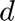
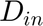
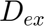
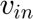
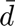
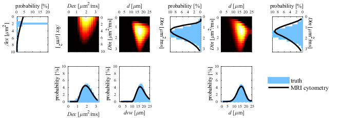

Example of performing MRI-cytometry fitting
This example shows how to (1) how to synthesize dMRI signals based on the MRI-cytometry method; and (2) how to fit the MRI-cytometry model to dMRI signal data to extract microstructural parameters such as distributiosns of cell size , intra- and extra-cellular diffusion coefficients  and , and calculated parameters such as apparent intracellular volume fraction  and mean cell size .
This script calls three functions
- FcnSetPars.m: sets up simulation parameters
- FcnSimulateSignal.m: synthesizes dMRI signals based on MRI-cytometry model
- FcnPlotDiagram.m: shows the diagram of MRI-cytometry fitting procedure
Reference
The main reference that should be cited when using the code in this script is
- Xu J, et al. Mapping nonparametric cell size distributions using diffusion MRI. Magn Reson Med. 2021;85(2):748-61. PubMed PMID: 32936478.
Comments or questions?
Please send your comments or questions to Junzhong (JZ) Xu (junzhong.xu@vanderbilt.edu)
Contents
Preliminary
clear variables ; clear obj ;
Generate a DiffusionPulseSequence object
% Create a trapezoidal cosine OGSE pulse sequence object for all OGSE acquisitions Nacq = 9 ; % total number of acquisition points pulse_tcos = mati.DiffusionPulseSequence(Nacq,... 'TE', 110,... % echo time [ms] 'delta', 40,... % gradient duration [ms] 'Delta', 45,... % separation of two gradients [ms] 'b', [0.1,0.2,0.3, 0.4, 0.2,0.4,0.6,0.8,1.0], ... % b value [ms/um^2] 'n', [2,2,2, 2, 1,1,1,1,1],... % number of oscillating cycles 'shape', "tcos",... % gradient waveform shape 'gdir', [0 0 1],... % gradient directions. It should be a Nx3 matrix 'trise', 0.9) ; % gradient rise time [ms] % Create a trapezoidal PGSE pulse sequence object for all PGSE acquisitions Nacq = 9 ; pulse_tpgse = mati.DiffusionPulseSequence(Nacq, ... 'TE', 110,... 'delta', 12, ... 'Delta', 74, ... 'b', [0.2:0.2:1.8], ... 'shape', "tpgse",... 'gdir', [0 0 1],... 'trise', 0.9) ; % Combine OGSE and PGSE pulse sequence objects pulse = mati.PulseSequence.cat(pulse_tcos, pulse_tpgse) ; % An example of choosing a subset of PulseSequence object to meet e.g., hardware limitations pulse = pulse(pulse.G<80e-5) ; % 80mT/m = 80 x 10^(-5) gauss/um % Display the PulseSequence object pulse.disp(pulse)
<a href="">Note: PulseSequence properties should be column vectors. They are shown as row vectors here for visualization purpose only
</a>
ans =
struct with fields:
delta: [40 40 40 40 40 40 40 12 12 12 12 12 12 12 12 12]
Delta: [45 45 45 45 45 45 45 74 74 74 74 74 74 74 74 74]
shape: [1×16 string]
b: [1×16 double]
G: [1×16 double]
n: [2 2 1 1 1 1 1 0 0 0 0 0 0 0 0 0]
trise: [1×16 double]
gdir: [3×16 double]
f: [1×16 double]
w: [1×16 double]
T: [20 20 40 40 40 40 40 0 0 0 0 0 0 0 0 0]
tp: [1×16 double]
tdiff: [5 5 10 10 10 10 10 70 70 70 70 70 70 70 70 70]
gamma: 26.7500
Nacq: 16
TR: []
TE: [110 110 110 110 110 110 110 110 110 110 110 110 110 110 110 110]
B0: []
df: []
Generate an MRI-cytometry model object
% Choose which specific model to use. All structure fields set here will override the default structure fields. nmodel = 7 ; switch nmodel case 1, structure.modelName = 'dNone_DinDist_DexNone' ; structure.Dfree = 3.07 ; case 2, structure.modelName = 'dDist_DinFixed_DexNone' ; structure.Din = 1.56 ; fitopts.Dd=1 ; case 3, structure.modelName = 'dDist_DinDist_DexNone' ; fitopts.Dd=1 ; structure.Dfree = 3.07 ; case 4, structure.modelName = 'dDist_DinFixed_DexDist' ; structure.Din = 1.56 ; case 5, structure.modelName = 'dDist_DinDist_DexDist' ; case 6, structure.modelName = 'dDist_DinFixed_DexDisper' ; case 7, structure.modelName = 'dDist_DinDist_DexDisper' ; otherwise , error('The nmodel is not reconized') ; end % MRI-cytometry uses its own special fitting method fitopts.fittingMethod = 'special' ; % Create an MRI-cytometry model object mricytometry = mati.MRICytometry(pulse, structure, fitopts) ;
Example of synthesize dMRI signals based on the MRI-cytometry mothod
% Set microstructural parameters of interest in the computer simulations % Choose ground-truth cell size $d$ distribution type nDist = 1 ; switch nDist case 1 sim.distribution = 'gaussian' ; sim.dcen = 16 ; sim.dsigma = 3 ; case 2 sim.distribution = 'bi-modal' ; sim.dcen1 = 8 ; sim.dsigma1 = 2 ; sim.frac1 = 0.7 ; sim.dcen2 = 16 ; sim.dsigma2 = 2 ; case 3 sim.distribution = 'gamma' ; sim.dalpha = 4 ; sim.dbeta = 2 ; otherwise end % Set other ground-truth parameters in a struct sim.Ndim = 3 ; % 1d, 2d, or 3d sim.Dincen = 1.58 ; % median of Din distribution sim.Dinsigma = 0.5 ; % standard deviation of Din distribution sim.Dexcen = 2 ; % median of Dex distribution sim.Dexsigma = 0.5 ; % standard deviation of Dex distribution sim.betaexcen = 2; % median of betaex distribution sim.betaexsigma = 0.25 ; % standard deviation of betaex distribution sim.vin = 0.7; % intracellular water fraction sim.vex = 0.3 ; % extracellular water fraction excluding free water sim.vfree = 1 - sim.vin - sim.vex ; % free water fraction sim.flag.DinDist = 'y' ; % should consider Din as a distribution? % Construct MRI-cytometry simulation parameters sim = FcnSetSimPars(sim) ; % Synthesize dMRI signals based on the MRI-cytometry method signal_sim = FcnSimulateSignal(sim, mricytometry) ;
Create an ImageData object
% Set Rician noise level. Set a very small (e.g., 1e-5) number for noise-free dMRI signals sigma_noise = 1e-5 ; % standard deviation of Gaussian noise in the real and the imaginary images assuming to be equal % Add Rician noise to synthesized noise-free signals signal_sim = mati.Physics.AddRicianNoise(signal_sim, sigma_noise) ; % Create an ImageData object for data fitting [Npulse, Nparms] = size(signal_sim) ; data = mati.ImageData(reshape(signal_sim',[Nparms, 1 1 Npulse])) ; % NOTE: data.img is a 4-dimension matrix: Nx * Ny * Nz * Npulse, where Npulse is the number of combinations of varying pulse parameters e.g., b, $t_{diff}$.
Fit MRI-cytometry model to dMRI signals
% Set fitting options if want to override default options fitopts.flag.parfor = 'y' ; % Create a Fit object fitpars = mati.FitPars(mricytometry, fitopts) ; warning off ; % Fit MRI-cytometry model to dMRI signal data fitout = fitpars.Fit(data) ;
Show the diagram of MRI-cytometry fitting procedure
This is lke Fig.1 in Xu et al. Mapping nonparametric cell size distributions using diffusion MRI. Magn Reson Med. 2021;85(2):748-61. PubMed PMID: 32936478; fitout.parms{1,1,1} indicates it is the voxel (nx=1,ny=1,nz=1)
FcnPlotDiagram(sim, fitout.parms{1,1,1}, fitpars.fitopts) ;
 Show other fitted results
the output of MRI-cytometry is a Nx x Ny x Nz cell array. Each cell contains 14 cell arrays with the definition below
- parmap{1}: distribution of intra dvw of cell-volume-weighted (cell size)
- parmap{2}: distribution of intra Din of cell-volume-weighted
- parmap{3}: distribution of extra Dex
- parmap{4}: distribution of extra betaex
- parmap{5}: distribution of intra d non-volume-weighted (cell size)
- parmap{6}: distribution of intra Din of non-volume-weighted
- parmap{7}: distribution of intra dCal non-volume-weighted (cell size), calculated from parmap{1} to show lower-pass filter effects
- parmap{8}: distribution of intra Din non-volume-weighted, calculated from parmap{1}
- parmap{9}: TBD
- parmap{10}: TBD
- parmap{11}: matrixInvw (cell-volume-weighted) obtained in step#1
- parmap{12}: matrixExvw (cell-volume-weighted) obtained in step#1
- parmap{13}: matrixIn (non-cell-volume-weighted) obtained in step#2
- parmap{14}: matrixInCal (none-cell-volume-weighted) calculated directly from matrixInvw
% Get the results of a voxel dist = fitout.parms{1,1,1} ; % Calculate the MRI-cytometry derived parameters vin_fitted = sum(dist{1}) ; dmean_fitted = sum(mricytometry.defaultFitopts.ds .* dist{5} / sum(dist{5})) ; %NOTE: distribution needs to be normalized when calculating mean cell size Dinmean_fitted = sum(mricytometry.defaultFitopts.Dins .* dist{6} / sum(dist{6})) ; %NOTE: distribution needs to be normalized when calculating mean intracellular diffusivity % Get ground-truth values vin_sim = sim.vin ; dmean_sim = sim.dmean ; Dinmean_sim = sim.Dinmean ; % Make a table to show comparison of MRI-cytometry derived vs ground-truth varNames = {'vin'; 'd_mean'; 'Din_mean'} ; MRICytometry = [vin_fitted ; dmean_fitted; Dinmean_fitted] ; Truth = [vin_sim ; dmean_sim ; Dinmean_sim] ; % Show tabulated comparison table(varNames, MRICytometry, Truth)
ans =
3×3 table
varNames MRICytometry Truth
____________ ____________ ______
{'vin' } 0.7054 0.7
{'d_mean' } 15.672 15.99
{'Din_mean'} 1.5279 1.5819